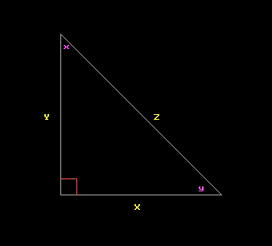

Une brève introduction à la trigonométrie

Ecrit par RandyKeeling
Ce tutoriel comprend:
Un triangle a trois côtés et dans l'espace "normal" (c.a.d-euclidien) a trois angles dont la somme des mesures est exactement 180 degrés (ou Pi radians). Pour ce tutoriel, nous allons traiter uniquement avec des triangles "normaux" (pour ceux qui s'intéressent à d'autres espaces, faites une recherche sur les triangles non-euclidiens ou la géométrie non-euclidienne).
Les triangles rectangles
Pour commencer, nous allons faire face à une classe spéciale de triangles: les triangles rectangles. Un triangle rectangle a un angle qui mesure 90 degrés (angle droit). Comme la somme des angles d'un triangle doit être exactement de 180 degrés, il ne peut y avoir qu'un seul angle de 90 degrés dans un triangle (et c'est le plus grand angle dans un triangle rectangle). Ci-dessous vous avez le code FreeBASIC pour dessiner une image d'un triangle rectangle. (Cette image sera reprise dans tout le tutoriel.) Dans cette image, les lettres majuscules nomment les côtés et leurs correspondances en lettres minuscules nomment l'angle opposé de ce côté. Par exemple, l'angle y est opposé au côté Y.
La boîte dans le coin inférieur gauche signifie que c'est un angle droit (il mesure 90 degrés). Le côté opposé de cet angle (côté Z) est appelé l'hypoténuse et c'est le côté le plus long dans un triangle rectangle.
Le théorème de Pythagore
Peut-être que le premier élément de la trigonométrie que la plupart des gens apprennent est la relation communément appelée Théorème de Pythagore. Il indique simplement que le carré de l'hypoténuse d'un triangle rectangle est égal à la somme des carrés des deux autres côtés. Il est plus facile à comprendre sous forme d'équation.
Z^2 = X^2 + Y^2
a des fonctions pour ces fonctions trigonométriques et d'autres.
Un exemple trivial d'application de cette loi pourrait être le suivant.
Si le joueur est de 100 mètres à l'est d'un emplacement marqué (l'origine) et deux joueurs sont à 150 mètres au nord du même endroit, à quelle distance sont-ils?
D = SQR(100^2 + 150^2)
Les fonctions trigonomètriques
Depuis longtemps, des personnes ont découvert que, indépendamment de la taille du triangle, certains ratios étaient toujours les mêmes. Par exemple, dans l'image du triangle ci-dessus, si la mesure de l'angle y est de 45 degrés, alors indépendamment de la taille du triangle, le ratio Y/X sera toujours le même. Les collections de ces ratios constituent les fonctions trigonométriques.
Les trois principales fonctions sont Sinus ( Sin ), Cosinus ( Cos ), et tangente (TAN). Il y a plusieurs manières de définir ces trois fonctions. L'une correspond aux relations entre les côtés d'un triangle rectangle.
Le FreeBASIC a des fonctions pour ces fonctions trigonométriques et d'autres.
L'application des fonctions trigonomètriques
En se référant à nouveau à l'image ci-dessus du triangle, disons que le joueur 1 est, sur le sol, en un point près de l'angle y et le joueur 2 est en un point près de l'angle x (au-dessus du sol). Si le joueur 1 sait à quelle distance il (ou elle) est du côté Y (disons 25,2 mètres) et peut mesurer la valeur de l'angle Y (disons 31,5 degrés) à quelle distance de la terre se trouve le joueurs 2? À quelle distance est le joueur 1 du joueur 2? Referring again to the triangle image above, let's say that player one is on the ground at the point near angle y and player two is at the point near angle x (off of the ground). If player one knows how far he or she is from the side Y (let's say 25.2 meters) and can measure the value of angle y (let's say 31.5 degrees) how far off the ground is player two? How far away is player one from player two?
Pour résoudre ce problème, examinons les éléments d'information que nous connaissons. Nous connaissons le côté adjacent à l'angle Y (25,2 mètres) et la mesure de l'angle Y (31,5 degrés). Cette information est suffisante pour utiliser la fonction tangente. Tan (y) = opposé/adjacent, ou TAN (31,5 degrés) = Opposé/25.2 mètres. En utilisant un peu d'algèbre pour réorganiser tout cela, nous obtenons Opposé = Tan (31,5 degrés) * 25,2 mètres. Pour trouver la distance entre les joueurs nous pouvons utiliser le théorème de Pythagore, maintenant que nous connaissons la mesure des deux côtés différents de l'hypoténuse du triangle ou nous pouvons utiliser le cosinus. L'utilisation du cosinus donne Cos (y) = adjacent/hypoténuse. Avec un peu d'algèbre nous obtenons, l'hypoténuse = 25,2 / Cos (31,5 degrés).
Avant que nous puissions écrire un programme pour résoudre ce problème, il faut rappeler que FreeBASIC, comme la plupart des langages de programmation, travaille en radians, pas en degrés (voir Mesure des angles Angles).
Avec FreeBASIC nous pouvons obtenir la réponse avec le code suivant.
Le code ci-dessus nous indique que le joueur 2 est à environ 15,4 mètres du sol et autour de 29,5 mètres (le long de l'hypoténuse).
Les fonctions trigonomètriques inverses
Mais que faire si vous connaissez les côtés d'un triangle et avez besoin de trouver la valeur de l'angle? Vous pouvez alors utiliser les fonctions trigonométriques inverses.
Cela donne un angle d'environ 0,6435 radians, soit environ 36,9 degrés. Les commandes FreeBASIC pour chacune de ces fonctions inverses sont:
Il existe d'autres fonctions trigonométriques qui sont définis en termes dans les fonctions ci-dessus. Bien qu'aucune des fonctions ci-dessous ne soient définies dans FreeBASIC.
Chacune d'elles a aussi une fonction inverse (ou arc).
Les lois des sinus, des cosinus et autres relations
Tout ce qui précède a démontré dans un triangle rectangle, mais ce n'est qu'une aide pour expliquer les fonctions trigonométriques de base. Ce qui suit ne repose pas sur des triangles rectangles; ces identités sont valables pour n'importe quel triangle.
Loi des sinus
Sin (y)/Y = Sin (x)/X = Sin (z)/Z
Loi des cosinus
Z^2 = X^2 + Y^2 - 2*X*Y*Cos(z)
Autres identités
Sin^2(y) + Cos^2(y) = 1
Ce qui est identique à Sin(y)*Sin(y) + Cos(y)*Cos(y) = 1
Tan(y) = Sin((y)/Cos(y)
Il existe d'autres identités utiles en-dehors de celles-là. Faites une recherche sur les identités trigonométriques ou consultez une référence mathématique plus élevée.
Ce tutoriel comprend:
- Les triangles rectangles
- Le théorème de Pythagore
- Les fonctions trigonomètriques
- L'application des fonctions trigonomètriques
- Les fonctions trigonomètriques inverses
- Les autres fonctions trigonomètriques
- Les lois des sinus, des cosinus et autres relations
Un triangle a trois côtés et dans l'espace "normal" (c.a.d-euclidien) a trois angles dont la somme des mesures est exactement 180 degrés (ou Pi radians). Pour ce tutoriel, nous allons traiter uniquement avec des triangles "normaux" (pour ceux qui s'intéressent à d'autres espaces, faites une recherche sur les triangles non-euclidiens ou la géométrie non-euclidienne).
Les triangles rectangles
Pour commencer, nous allons faire face à une classe spéciale de triangles: les triangles rectangles. Un triangle rectangle a un angle qui mesure 90 degrés (angle droit). Comme la somme des angles d'un triangle doit être exactement de 180 degrés, il ne peut y avoir qu'un seul angle de 90 degrés dans un triangle (et c'est le plus grand angle dans un triangle rectangle). Ci-dessous vous avez le code FreeBASIC pour dessiner une image d'un triangle rectangle. (Cette image sera reprise dans tout le tutoriel.) Dans cette image, les lettres majuscules nomment les côtés et leurs correspondances en lettres minuscules nomment l'angle opposé de ce côté. Par exemple, l'angle y est opposé au côté Y.
ScreenRes 640,480,8
'Triangle
Color 7
Line (220,140) - (220,340)
Line (220,140) - (420,340)
Line (220,340) - (420,340)
'right angle
Color 12
Line (220,320) - (240,320)
Line (240,320) - (240,340)
'angles
Color 13
Locate 20,29
Print "x"
Locate 42,50
Print "y"
'Sides
Color 14
Locate 31,43
Print "Z"
Locate 31, 26
Print "Y"
Locate 45, 40
Print "X"
Sleep
'Triangle
Color 7
Line (220,140) - (220,340)
Line (220,140) - (420,340)
Line (220,340) - (420,340)
'right angle
Color 12
Line (220,320) - (240,320)
Line (240,320) - (240,340)
'angles
Color 13
Locate 20,29
Print "x"
Locate 42,50
Print "y"
'Sides
Color 14
Locate 31,43
Print "Z"
Locate 31, 26
Print "Y"
Locate 45, 40
Print "X"
Sleep

La boîte dans le coin inférieur gauche signifie que c'est un angle droit (il mesure 90 degrés). Le côté opposé de cet angle (côté Z) est appelé l'hypoténuse et c'est le côté le plus long dans un triangle rectangle.
Le théorème de Pythagore
Peut-être que le premier élément de la trigonométrie que la plupart des gens apprennent est la relation communément appelée Théorème de Pythagore. Il indique simplement que le carré de l'hypoténuse d'un triangle rectangle est égal à la somme des carrés des deux autres côtés. Il est plus facile à comprendre sous forme d'équation.
Z^2 = X^2 + Y^2
a des fonctions pour ces fonctions trigonométriques et d'autres.
Un exemple trivial d'application de cette loi pourrait être le suivant.
Si le joueur est de 100 mètres à l'est d'un emplacement marqué (l'origine) et deux joueurs sont à 150 mètres au nord du même endroit, à quelle distance sont-ils?
D = SQR(100^2 + 150^2)
Les fonctions trigonomètriques
Depuis longtemps, des personnes ont découvert que, indépendamment de la taille du triangle, certains ratios étaient toujours les mêmes. Par exemple, dans l'image du triangle ci-dessus, si la mesure de l'angle y est de 45 degrés, alors indépendamment de la taille du triangle, le ratio Y/X sera toujours le même. Les collections de ces ratios constituent les fonctions trigonométriques.
Les trois principales fonctions sont Sinus ( Sin ), Cosinus ( Cos ), et tangente (TAN). Il y a plusieurs manières de définir ces trois fonctions. L'une correspond aux relations entre les côtés d'un triangle rectangle.
- Sinus (Sin) est le rapport entre le côté opposé à l'angle en question et l'hypoténuse. Dans le triangle ci-dessus, le sinus de l'angle y (écrit SIN(y)) est la longueur du côté Y divisé par la longueur du côté Z.
- Cosinus (Cos) est le rapport entre le côté adjacent à l'angle en question et l'hypoténuse. Dans le triangle ci-dessus, le cosinus de l'angle y (écrit COS(y)) est la longueur du côté X divisé par la longueur du côté Z.
- Tangente (Tan) est le rapport entre le côté opposé à l'angle en question et le côté adjacent à l'angle en question. Dans le triangle ci-dessus, la tangente de l'angle y (écrit Tan(y)) est la longueur du côté Y divisé par la longueur du côté X.
Le FreeBASIC a des fonctions pour ces fonctions trigonométriques et d'autres.
L'application des fonctions trigonomètriques
En se référant à nouveau à l'image ci-dessus du triangle, disons que le joueur 1 est, sur le sol, en un point près de l'angle y et le joueur 2 est en un point près de l'angle x (au-dessus du sol). Si le joueur 1 sait à quelle distance il (ou elle) est du côté Y (disons 25,2 mètres) et peut mesurer la valeur de l'angle Y (disons 31,5 degrés) à quelle distance de la terre se trouve le joueurs 2? À quelle distance est le joueur 1 du joueur 2? Referring again to the triangle image above, let's say that player one is on the ground at the point near angle y and player two is at the point near angle x (off of the ground). If player one knows how far he or she is from the side Y (let's say 25.2 meters) and can measure the value of angle y (let's say 31.5 degrees) how far off the ground is player two? How far away is player one from player two?
Pour résoudre ce problème, examinons les éléments d'information que nous connaissons. Nous connaissons le côté adjacent à l'angle Y (25,2 mètres) et la mesure de l'angle Y (31,5 degrés). Cette information est suffisante pour utiliser la fonction tangente. Tan (y) = opposé/adjacent, ou TAN (31,5 degrés) = Opposé/25.2 mètres. En utilisant un peu d'algèbre pour réorganiser tout cela, nous obtenons Opposé = Tan (31,5 degrés) * 25,2 mètres. Pour trouver la distance entre les joueurs nous pouvons utiliser le théorème de Pythagore, maintenant que nous connaissons la mesure des deux côtés différents de l'hypoténuse du triangle ou nous pouvons utiliser le cosinus. L'utilisation du cosinus donne Cos (y) = adjacent/hypoténuse. Avec un peu d'algèbre nous obtenons, l'hypoténuse = 25,2 / Cos (31,5 degrés).
Avant que nous puissions écrire un programme pour résoudre ce problème, il faut rappeler que FreeBASIC, comme la plupart des langages de programmation, travaille en radians, pas en degrés (voir Mesure des angles Angles).
Avec FreeBASIC nous pouvons obtenir la réponse avec le code suivant.
Const PI As Double = 3.1415926535897932
Dim Opposite As Double
Dim Hypotenuse As Double
Dim Angle As Double
Angle = 31.5 * Pi / 180
Opposite = Tan ( Angle ) * 25.2
Hypotenuse = 25.2 / Cos ( Angle )
Print Opposite
Print Hypotenuse
Sleep
Dim Opposite As Double
Dim Hypotenuse As Double
Dim Angle As Double
Angle = 31.5 * Pi / 180
Opposite = Tan ( Angle ) * 25.2
Hypotenuse = 25.2 / Cos ( Angle )
Print Opposite
Print Hypotenuse
Sleep
Le code ci-dessus nous indique que le joueur 2 est à environ 15,4 mètres du sol et autour de 29,5 mètres (le long de l'hypoténuse).
Les fonctions trigonomètriques inverses
Mais que faire si vous connaissez les côtés d'un triangle et avez besoin de trouver la valeur de l'angle? Vous pouvez alors utiliser les fonctions trigonométriques inverses.
- ArcSine (or Sinus Inverse)
- ArcCosine (or Cosinus Inverse)
- ArcTangent (or Tangente Inverse)
Print Asin (30/50)
Cela donne un angle d'environ 0,6435 radians, soit environ 36,9 degrés. Les commandes FreeBASIC pour chacune de ces fonctions inverses sont:
- Asin (arcsine)
- Acos (arccosine)
- Atn (arctan, il y a aussi Atan2 qui prend les côtés opposé et adjacent du triangle, et non pas leur rapport)
Il existe d'autres fonctions trigonométriques qui sont définis en termes dans les fonctions ci-dessus. Bien qu'aucune des fonctions ci-dessous ne soient définies dans FreeBASIC.
Chacune d'elles a aussi une fonction inverse (ou arc).
Les lois des sinus, des cosinus et autres relations
Tout ce qui précède a démontré dans un triangle rectangle, mais ce n'est qu'une aide pour expliquer les fonctions trigonométriques de base. Ce qui suit ne repose pas sur des triangles rectangles; ces identités sont valables pour n'importe quel triangle.
Loi des sinus
Sin (y)/Y = Sin (x)/X = Sin (z)/Z
Loi des cosinus
Z^2 = X^2 + Y^2 - 2*X*Y*Cos(z)
Autres identités
Sin^2(y) + Cos^2(y) = 1
Ce qui est identique à Sin(y)*Sin(y) + Cos(y)*Cos(y) = 1
Tan(y) = Sin((y)/Cos(y)
Il existe d'autres identités utiles en-dehors de celles-là. Faites une recherche sur les identités trigonométriques ou consultez une référence mathématique plus élevée.